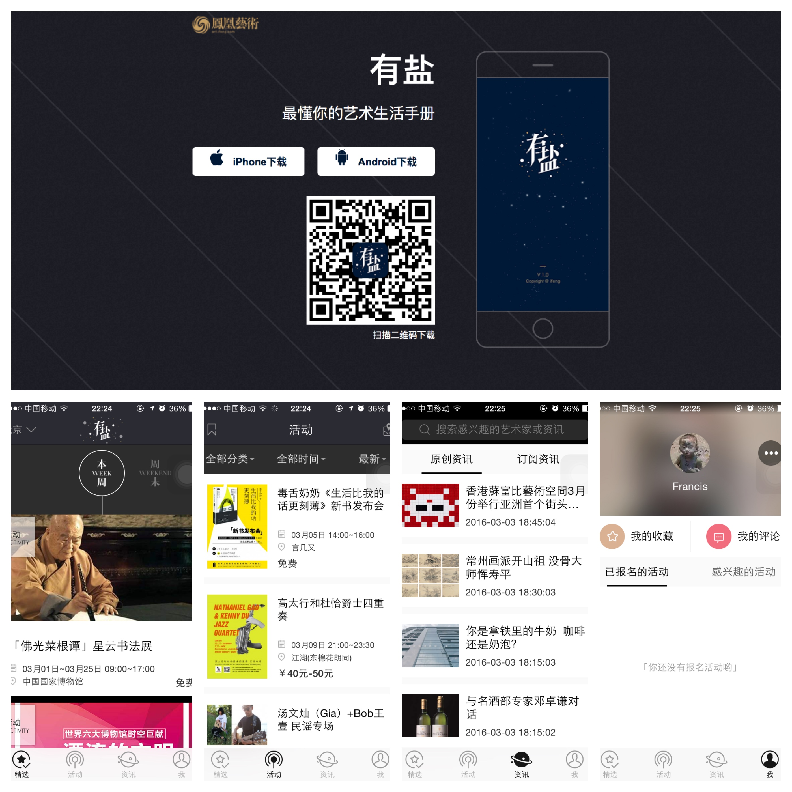
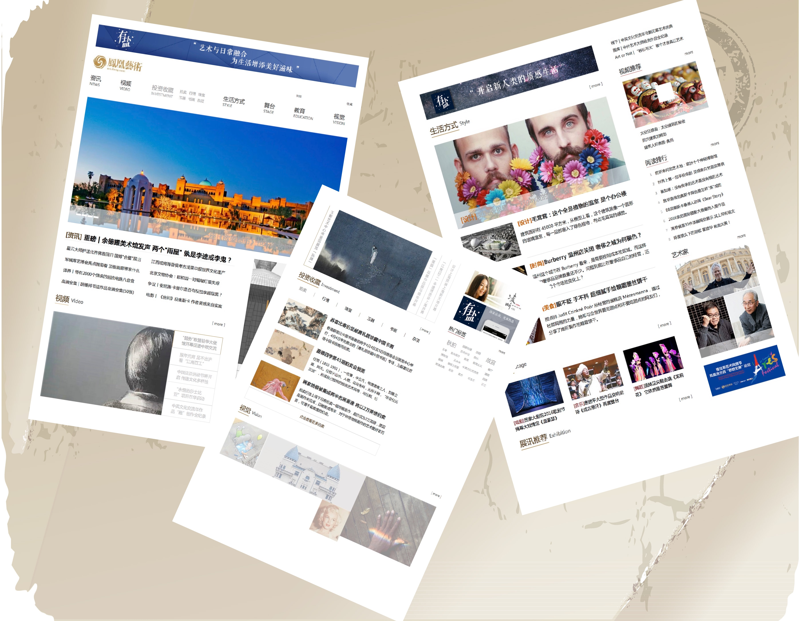
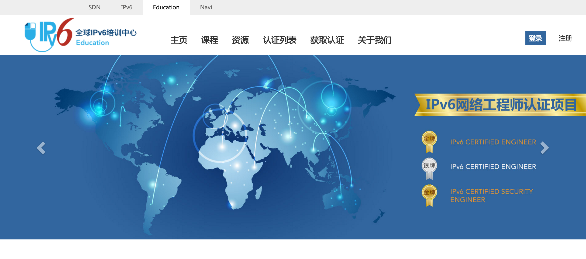
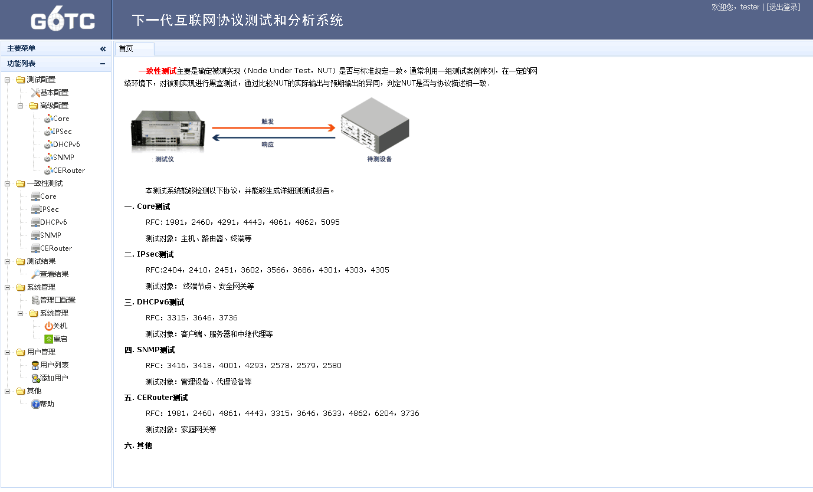
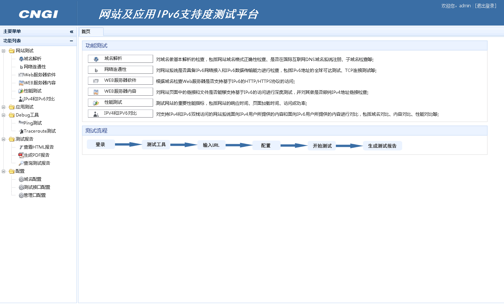

Francis
A student major in Computer Science and Technology ,
focus on PHP Development, Technology Architecture.
-
有盐APP @art@ifeng

-
提供最新的艺术时尚界的资讯\近期活动以及活动报名购票等
职责:APP接口\APP后台程序\HTML5页面的编写以及APP后台架构的搭建以及服务器性能调优.
-
H5
PHP
Try it
-
凤凰艺术 @art@ifeng

-
凤凰艺术全媒体（art.ifeng.com）以凤凰卫视传媒集团为依托, 是集团实现第三步战略转型的旗舰媒体。它使用最新的科技手段，创新性地参与文化领域的创造与传播，向全球华语受众提供高端文化资讯。
职责:后台模块开发\HTML5页面编写\接口编写\服务器架构搭建与维护
-
H5
PHP
Try it
-
网络工程师认证系统 @BII

-
通过在线考试，排除现场考试因地域不同距离较远而产生的不便利性，充分利用互联网思维，使考试变得更简单方便，也可以吸引更多不同地域的考生进行报名。
* IPv6网络工程师认证官网，提供课程介绍、认证查询、资料下载等；
* 在线考试系统分为练习和考试两种模式，考生需要购买相关课程才能进行练习，包括按章节练习、强化训练、模拟考试等功能，练习通过后可以在线进行考试；
* 后台提供考场管理，财务管理，用户管理，考试设计，试卷管理，试题管理等功能
职责:负责后台模块开发与前端数据交互\负责项目服务器管理与优化
-
PHP
Try it
-
设备测试仪系统 @BII

-
针对于网络设备进行IPv6以及SDN网络协议测试，开发可易用的测试界面，摆脱命令行执行，方便用户进行测试。
可以实时查看测试结果和测试日志，具有保存与生成测试报告功能，包含设备和测试仪配置功能等。
* 由于项目特殊性，并未上线
职责:负责后台模块开发与前端数据交互\负责项目服务器管理与优化\负责测试仪器协议测试技术支持
-
PHP
-
网站测试系统 @BII Group

-
国内第一个网站IPv6支持度测试平台，中国下一代互联网示范工程(CNGI子项目)。
针对网站系统升级改造支持IPv6过程涉及到的域名、网络层、应用层、安全防护、系统管理和性能等几方面进行全面。
已为国内各大高校网站、政府网站以及商业网站进行IPv6支持度测试，包括淘宝等著名商业网站。
* 作为内部工具，未提供上线
职责:负责后台模块开发与前端数据交互\负责项目服务器管理与优化\负责测试仪器协议测试技术支持
-
PHP
{% if site.duoshuo_username %}
-
{% endif %}
{% if site.duoshuo_username %}
{% endif %}